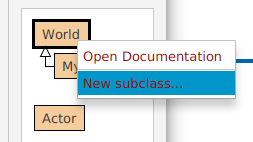
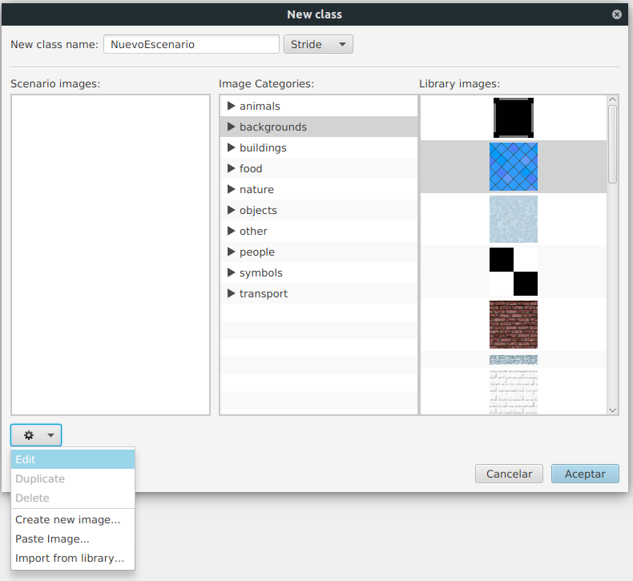
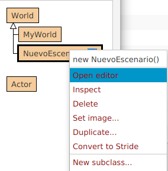
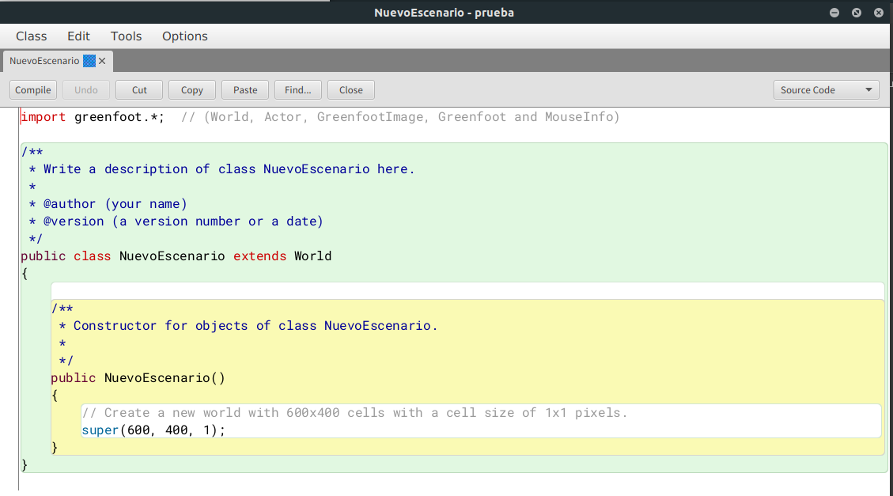
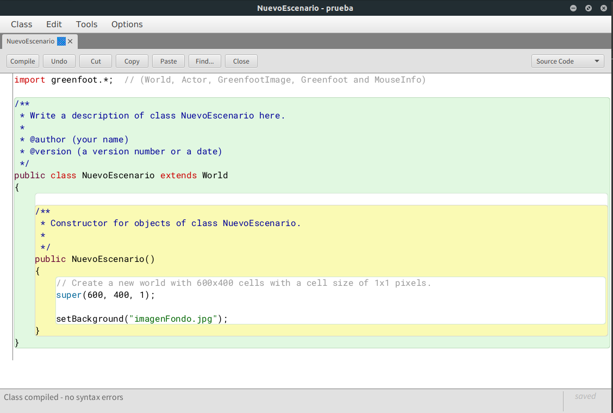
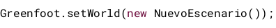

En greenfoot los escenarios se crean a partir de subclases de la clase World. En esta sección veremos aspectos básicos del manejo de esta clase:
Proyecto programación y computación - Juego con greenfoot
2ª fase. Creación de los escenarios
Crear un nuevo escenario (nueva subclase de World)
Para crear una nueva clase que será nuestro escenario, pulsamos sobre la clase World con el botón derecho del ratón y seleccionamos la opción New subclass:

Se mostrará la siguiente ventana:

Tendremos que elegir:
- Si va a ser stride o java. La primera opción permite modificar el código en forma de bloque. Utilizaremos de momento la segunda, para poder editar directamente el código java
- El nombre
- Las imágenes del escenario. Podemos usar algunas de las que vienen por defecto en greenfoot o bien crear una imagen nueva, seleccionar o pegar una ya existente
Opciones para editar el escenario
Para ver las opciones que nos permite el framework de greenfoot, pulsamos con el botón derecho sobre la clase del escenario y nos mostrará algo parecido a la siguiente imagen:

Vamos a ver de forma breve qué significa cada opción:
new NuevoEscenario().Permite crear el escenario y aplicarlo en el programa. Cuando lo creamos, se genera la estructura, pero realmente no se ha llegado a crear en el programa- Inspect. Accederemos al código del programa y podremos editarlo. Será una ventana similar a la siguiente:
- Delete. Para borrar el escenario
- Set image. Cambia el icono del escenario. No hay que confundir el icono con el fondo (background)
- Duplicate. Duplica el escenario
- Convert to stride. Cambia el modo de visualización del código a un estilo de bloques
Funciones de la clase World (escenario)
Todas las funciones de la clase World y la documentación correspondiente se pueden consultar en esta página. En esta sección se explicarán las más significativas, sin llegar a hacer un repaso exhaustivo de todas las posibilidades:
- Constructor
Es el primer procedimiento que se ejecuta cuando se crea un objeto de la clase. Por defecto, el código que automáticamente crea greenfoot es similar al siguiente:
public NuevoEscenario()
{
// Create a new world with 600x400 cells with a cell size of 1x1 pixels.
super(600, 400, 1);
}
El método super() se utiliza para llamar al constructor de la clase padre (World) con los parámetros de anchura, altura y tamaño de celda).
- Cambiar la imagen de fondo
Para cambiar la imagen de fondo usaremos la instrucción setBackground(). , con el nombre de una imagen (debe estar en la carpeta images del proyecto) o con un objeto de tipo GreenfoootImage. A continuación se muestra un código de ejemplo para establecer como imagen de fondo el archivo "imagen.jpg" dentro del propio constructor:

- Cambiar un escenario por otro
En el caso de que tengamos varios escenarios, podemos intercambiar uno por otro usando la instrucción setWorld de la clase Greenfoot. Por ejemplo, si tenemos una clase nuevoEscenario y queremos usarlo tendríamos que usar:

- Volver a pintar el mundo
Si necesitamos volver a pintar el escenario, podremos usar el método repaint()
- Empezar la ejecución
El método started() se llama cuando comienza la ejecución del juego. En la implementación inicial está vacío, por lo que hay que sobreescribirlo (overwrite) para implementar e incluir las instrucciones que necesitemos ejecutar cuando el juego empiece.
- Parar la ejecución
El método inverso al anterior y que se ejecuta cuando el juego para es stopped(). Al igual que antes, el método original está vacío y hay que sobreescribirlo para incluir las instrucciones que necesitemos para finalizar el juego
Tarea 2
- Definir al menos tres escenarios:
- Juego
- Pantalla de haber ganado el juego
- Pantalla de game over
- Para cada escenario se personalizará el diseño. Las imágenes que uséis deberán ser de elaboración propia o libres de derechos
Qué se entrega en esta fase
- Url del repositorio donde estarán todos los archivos del proyecto de greenfoot
- Documento explicando brevemente cada escenario, incluyendo la procedencia de las imágenes utilizadas (elaboración propia o url donde se han obtenido)
Obra publicada con Licencia Creative Commons Reconocimiento Sin obra derivada 4.0